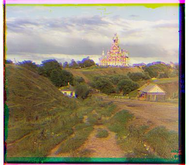

L2 Loss
Negative Normalized Cross-Correlation (NCC)

Negative Structural Similarity Loss

I used a naive approach that loops over possible (x,y) displacements from -15 to 15 in each axis. The displacements were performed by using np.roll. I tried this approach using 3 different losses. L2 loss and normalized cross correlation were recommended by the assignment, but I got the best results using structural similarity, which I found worked well for projects in past years. For cathedral.jpg using negative structural similarity as my loss, the optimal displacements found were Green Displacement = 5, 2 and Red Displacement = 12, 3.
I used a recursive implementation to execute the pyramid approach and optimize the search process. At each call, the recursive function will call itself on the image downsized by 1/2. This returns the optimal displacement for the downsized image (x, y). Then we rescale this to 2x and 2y and search for the optimal displacement in a x-10 to x+10 and y-10 to y+10 window.


I noticed that on some images, particularly on melons.tif, some parts of the image were very dark and lacked contrast. I applied automatic contrasting that rescales the pixel values of each channel to 0 to 1. We can see that this makes some parts, such as the man's face in the melons image, much clearer. I also tried this technique on Emir and saw more clarity in the face.